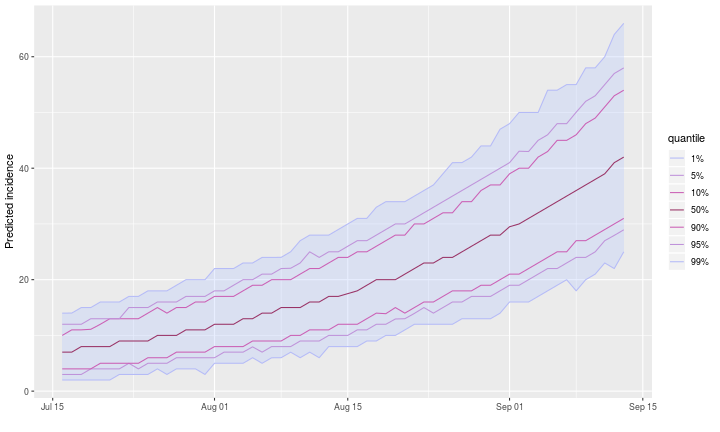
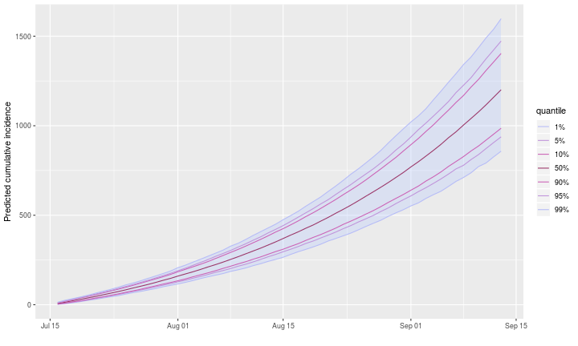
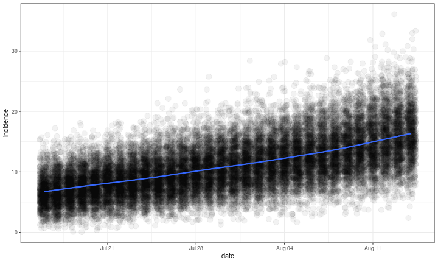
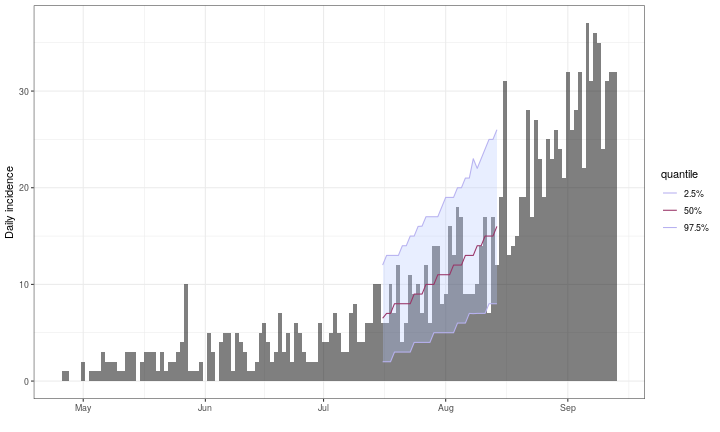

This package uses data on daily incidence, the serial interval (time between onsets of infectors and infectees) and the reproduction number to simulate plausible epidemic trajectories and project future incidence. It relies on a branching process where daily incidence follows a Poisson process determined by a daily infectiousness, computed as:
$$ \lambda_t = \sum_{s = 1}^{t - 1} y_s w(t - s) $$
where $w()$ is the probability mass function (PMF) of the serial interval, and $y_s$ is the incidence at time $s$.
What does it do?
The main features of the package include:
project: a function generating projections from an existingincidenceobject, a serial interval distribution, and a set of plausible reproduction numbers ($R$); returns aprojectionsobject.plot/print: plotting and printing methods forprojectionsobjects.get_dates: accessors forprojectionsobjects.cumulate: cumulate predicted incidence over time.as.data.frame: conversion fromprojectionsobjects todata.frame.[: subsetting operator forprojectionsobjects, permiting to specify which dates and simulations to retain; uses a syntax similar to matrices, i.e.x[i, j], wherexis theprojectionsobject,ia subset of dates, andja subset of simulations.subset: subset aprojectionsobject by specifying a time window.build_projections: build aprojectionsobject from an input matrix and optional dates.
Resources
Worked example
In the following, we project future incidence using a simulate Ebola outbreak distributed in the package outbreaks:
library(outbreaks)
library(incidence)
onset <- ebola_sim$linelist$date_of_onset
i <- incidence(onset)
plot(i) # full outbreak

We create a serial interval distribution using distcrete:
library(distcrete)
library(epitrix)
mu <- 15.3
sigma <- 9.3
cv <- sigma / mu
params <- gamma_mucv2shapescale(mu, cv)
params## $shape
## [1] 2.706556
##
## $scale
## [1] 5.652941## A discrete distribution
## name: gamma
## parameters:
## shape: 2.70655567117586
## scale: 5.65294117647059plot(1:50, si$d(1:50), type = "h", lwd = 3, col = "navy",
main = "Serial interval", xlab = "Days after onset",
ylab = "Relative infectiousness")
We predict future incidence based on these data, assuming a reproduction number of 1.5, from day 100 and for 60 days:
library(projections)
set.seed(1)
pred <- project(i[1:100], R = 1.5, si = si, n_days = 60, n_sim = 1000)
pred##
## /// Incidence projections //
##
## // class: projections, matrix
## // 60 dates (rows); 1,000 simulations (columns)
##
## // first rows/columns:
## [,1] [,2] [,3] [,4] [,5] [,6]
## 2014-07-16 7 8 6 12 4 3
## 2014-07-17 10 7 5 7 10 12
## 2014-07-18 3 6 6 11 6 6
## 2014-07-19 9 7 9 9 6 12
## .
## .
## .
##
## // dates:
## [1] "2014-07-16" "2014-07-17" "2014-07-18" "2014-07-19" "2014-07-20"
## [6] "2014-07-21" "2014-07-22" "2014-07-23" "2014-07-24" "2014-07-25"
## [11] "2014-07-26" "2014-07-27" "2014-07-28" "2014-07-29" "2014-07-30"
## [16] "2014-07-31" "2014-08-01" "2014-08-02" "2014-08-03" "2014-08-04"
## [21] "2014-08-05" "2014-08-06" "2014-08-07" "2014-08-08" "2014-08-09"
## [26] "2014-08-10" "2014-08-11" "2014-08-12" "2014-08-13" "2014-08-14"
## [31] "2014-08-15" "2014-08-16" "2014-08-17" "2014-08-18" "2014-08-19"
## [36] "2014-08-20" "2014-08-21" "2014-08-22" "2014-08-23" "2014-08-24"
## [41] "2014-08-25" "2014-08-26" "2014-08-27" "2014-08-28" "2014-08-29"
## [46] "2014-08-30" "2014-08-31" "2014-09-01" "2014-09-02" "2014-09-03"
## [51] "2014-09-04" "2014-09-05" "2014-09-06" "2014-09-07" "2014-09-08"
## [56] "2014-09-09" "2014-09-10" "2014-09-11" "2014-09-12" "2014-09-13"

## 2014-07-16 2014-07-17 2014-07-18 2014-07-19 2014-07-20 2014-07-21
## 6.912 7.289 7.706 7.774 8.098 8.425
## 2014-07-22 2014-07-23 2014-07-24 2014-07-25 2014-07-26 2014-07-27
## 8.669 9.112 9.272 9.712 10.003 10.024
## 2014-07-28 2014-07-29 2014-07-30 2014-07-31 2014-08-01 2014-08-02
## 10.477 10.943 11.320 11.410 12.073 12.162
## 2014-08-03 2014-08-04 2014-08-05 2014-08-06 2014-08-07 2014-08-08
## 12.543 13.035 13.437 13.667 14.265 14.718
## 2014-08-09 2014-08-10 2014-08-11 2014-08-12 2014-08-13 2014-08-14
## 14.908 15.553 16.114 16.328 16.844 17.398
## 2014-08-15 2014-08-16 2014-08-17 2014-08-18 2014-08-19 2014-08-20
## 17.880 18.263 18.995 19.770 20.108 20.817
## 2014-08-21 2014-08-22 2014-08-23 2014-08-24 2014-08-25 2014-08-26
## 21.260 22.123 22.876 23.247 23.956 24.795
## 2014-08-27 2014-08-28 2014-08-29 2014-08-30 2014-08-31 2014-09-01
## 25.603 26.175 27.145 27.997 28.709 29.856
## 2014-09-02 2014-09-03 2014-09-04 2014-09-05 2014-09-06 2014-09-07
## 30.484 31.232 32.390 33.385 34.336 34.978
## 2014-09-08 2014-09-09 2014-09-10 2014-09-11 2014-09-12 2014-09-13
## 36.270 37.390 38.474 39.556 41.200 42.389## 2014-07-16 2014-07-17 2014-07-18 2014-07-19 2014-07-20 2014-07-21
## [1,] 0 1 1 0 1 1
## [2,] 16 17 17 17 17 18
## 2014-07-22 2014-07-23 2014-07-24 2014-07-25 2014-07-26 2014-07-27
## [1,] 1 2 1 2 2 2
## [2,] 21 19 22 21 20 23
## 2014-07-28 2014-07-29 2014-07-30 2014-07-31 2014-08-01 2014-08-02
## [1,] 3 2 2 2 3 2
## [2,] 22 25 25 27 26 27
## 2014-08-03 2014-08-04 2014-08-05 2014-08-06 2014-08-07 2014-08-08
## [1,] 3 3 3 2 4 4
## [2,] 26 28 25 28 31 29
## 2014-08-09 2014-08-10 2014-08-11 2014-08-12 2014-08-13 2014-08-14
## [1,] 4 5 4 4 6 5
## [2,] 30 33 35 31 36 32
## 2014-08-15 2014-08-16 2014-08-17 2014-08-18 2014-08-19 2014-08-20
## [1,] 5 5 6 7 6 8
## [2,] 37 36 40 38 38 39
## 2014-08-21 2014-08-22 2014-08-23 2014-08-24 2014-08-25 2014-08-26
## [1,] 8 7 6 6 6 8
## [2,] 40 42 49 44 48 48
## 2014-08-27 2014-08-28 2014-08-29 2014-08-30 2014-08-31 2014-09-01
## [1,] 9 10 10 9 10 12
## [2,] 46 45 49 51 51 55
## 2014-09-02 2014-09-03 2014-09-04 2014-09-05 2014-09-06 2014-09-07
## [1,] 12 11 13 14 14 11
## [2,] 65 62 58 69 60 68
## 2014-09-08 2014-09-09 2014-09-10 2014-09-11 2014-09-12 2014-09-13
## [1,] 14 14 16 12 19 21
## [2,] 66 68 63 71 75 75An alternative representation of the outcomes:
## date incidence sim
## 1 2014-07-16 7 1
## 2 2014-07-17 10 1
## 3 2014-07-18 3 1
## 4 2014-07-19 9 1
## 5 2014-07-20 13 1
## 6 2014-07-21 5 1## `geom_smooth()` using method = 'gam' and formula 'y ~ s(x, bs = "cs")'
Predictions can also be added to the epicurve:

Vignettes
projections does not currently have a dedicated vignette; instead, it is illustrated in conjunction with earlyR on this vignette.
Websites
A dedicated website can be found at: http://www.repidemicsconsortium.org/projections.
Getting help online
Bug reports and feature requests should be posted on github using the issue system. All other questions should be posted on the RECON forum:
http://www.repidemicsconsortium.org/forum/
Contributions are welcome via pull requests.
Please note that this project is released with a Contributor Code of Conduct. By participating in this project you agree to abide by its terms.